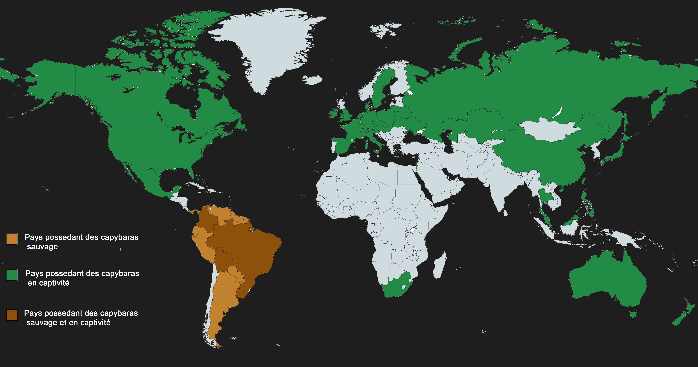

Les Capybaras dans le monde
Les capybaras ne sont présents à l’état naturel que dans un petit nombre de pays ; cependant, il est possible de les trouver en captivité dans des zoos dans une grande partie de la planète.
| Continent | Nombre estimé de capybaras |
|---|---|
| Amérique du Sud | 2 000 000 |
| Amérique centrale | 50 000 |
| Autres continents (zoos) | Quelques milliers |